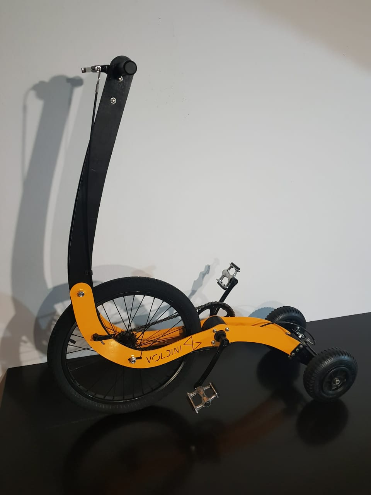

Nuestros productos
| Producto | Talle | Color | Cantidad en Stock |
|---|---|---|---|
| Triciclos | SL | Negro, Verde | 5 |
| Running bike | L | Azul, Negro, Rojo | 4 |
| Trike Bike | M | "A pedido" | 4 |
TRICICLO
Disfrute del ritmo relajado de la conducción reclinada en la reverse trike bellamente diseñada.

RUNNING BIKE
Subite a la Running bike.Su geometria y las proporciones la hacen ergonomica y facil de usar.
Trike bike
Si te gustan las bicicletas, tenes que probar la mejor bicileta diseñada para la ciudad.